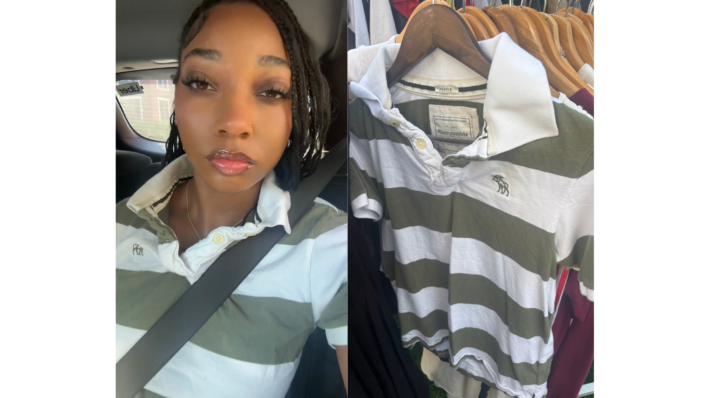

About My Passion for Thrifting
My journey into thrifting started in highschool when my brother took me to my first thrift store in NYC and it quickly transformed into something much more meaningful. It evolved into a commitment to sustainable fashion to the point that I can confiently say 90% of my wardrobe is thrifted.
Thrifting has taught me to see clothing as more than disposable commodities. The clothes that I have thrifted each have a story and a memory behind how i found them. I've found so many vintage finds that you simply can't find in mainstream retail stores and that would cost an arm and a leg otherwise. The thrill of the hunt and the satisfaction of finding that perfect item makes thrifting truly fun and an adventure.
As a student studying environmental science and data science, I've learned about the devastating environmental impact of the fashion industry; it's one of the world's largest polluters. The average American throws away approximately 81 pounds of clothing each year, and most of it ends up in landfills where synthetic fabrics can take hundreds of years to decompose.
Beyond the environmental benefits, thrifting has connected me with a community of like-minded individuals who value fashion and creativity. It's helped me develop my personal style in ways that retail shopping never could. Through this website, I hope to share my passion, inspire others to explore secondhand fashion.
Let's Connect
Interested in sustainable fashion? Reach out to me!
Email: raheem.n@northeastern.edu
Instagram: @lovenuskii
LinkedIn: My LinkedIn